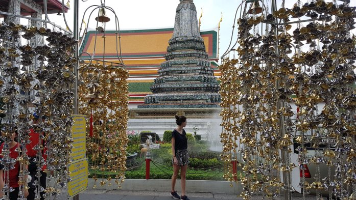
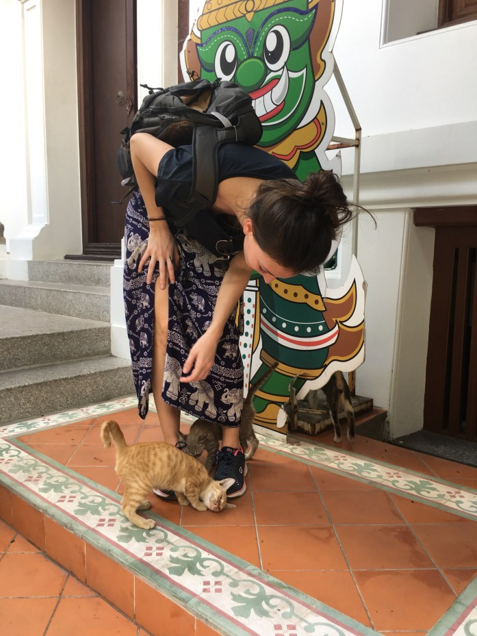
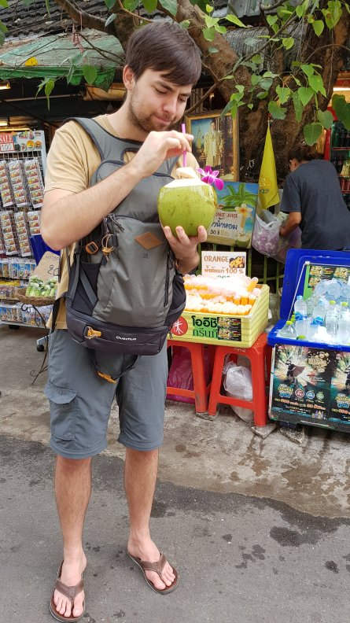

I nostri ultimi giorni a Bangkok sono passati facendo visita a due templi spettacolari (il Wat Arun (tempio dell’alba) e il Wat Traimit (tempio dal Buddha d’oro)), passeggiando nel labirintico mercato di Chatuchak e “godendoci” un massaggio tipico thailandese.

Tempio spettacolare sulla riva del fiume! Peccato che non era permesso salire sulla cima!
Tra il tempio e il fiume c’era un giardinetto molto caratteristico in cui abbiamo anche trovato dei gattini mooolto carini!
A quanto pare la statua del Buddha è in oro massiccio!! Ho provato a convincere Giada a non tagliarsi le unghie e provare a grattare via un po del prezioso materiale.. Scherzi a parte questo tempio ci è piaciuto molto, sia per l’imponente statua del Buddha, che per i minuti di aria fresca che ci siamo goduti al suo interno.
Per concludere il nostro soggiorno nella capitale Thailandese abbiamo fatto un giro nel mercato di Chatuchak costituito da oltre 15’000 bancarelle e negozietti di ogni specie.
Buono il latte di cocco fresco!!
Comment Section